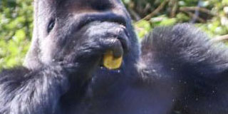

Here are the gorillas
Siamang

Siamang is the largest of the gibbons, with a size of 75 to 90 cm. This species is monogamous, the female leading the couple. At dawn and dusk, the male and the female begin a territorial song, responding to each other. This song, thanks to the laryngeal sac, is heard at 3 or even 4 km around. Siamangs, in their natural environment, very rarely descend to the ground.
Read MoreGibbon

Hylobatidae (Hylobatidae) are a family of hominoid primates (great apes) commonly called gibbons. Certain species are more precisely called houlock or siamang. These species differ mainly from other great apes by their smaller size, the significant length of their arms in relation to their body, their exclusively arboreal way of life, the use of brachiation as the main...
Read MoreOrang outan

Orang outans are a genus (Pongo) of monkeys belonging to the hominid family. They are great diurnal monkeys, with sparse coats of rust to dark orange color, which like the other hominoids, do not have a tail. They are endemic to the tropical forests of the islands of Sumatra and Borneo, territories shared between Indonesia and Malaysia. Severely threatened by the destruction of...
Read MoreGorilla

The mountain gorilla (Gorilla beringei beringei) is one of the two subspecies of the eastern gorilla. It is listed as endangered by the IUCN as of 2018. There are two populations: One is found in the Virunga volcanic mountains of Central Africa, within three National Parks: Mgahinga, in south-west Uganda; Volcanoes...
Read MoreEast gorilla

The female measures approximately 1.50 m for 70 to 114 kg and the male 1.85 m for approximately 160 kg. The female reaches sexual maturity around 10 years and the male around 15 years. The female's estrous cycle lasts 28 days, there is no visible menstrual flow. It is the female who initiates mating, the male approaches slowly and hesitantly. Gestation lasts eight and a half months, the female...
Read MoreWest gorilla
The Western Gorilla1 (Gorilla gorilla), sometimes simply called "Gorilla" 2, is one of two species of the genus Gorilla, along with the Eastern Gorilla (Gorilla beringei). Gorillas are part of the hominid family. The Western Gorilla can measure up to 1.7 meters for the male and 1.3 meters for the female. It can weigh up to 180 kg for males and 70 kg for females. Males can reach 230 kilos in captivity when they are less active than...
Read MoreCross gorilla

(Gorilla gorilla diehli) is, along with the Western Lowland Gorilla (Gorilla gorilla gorilla), a subspecies of the Western Gorilla (Gorilla gorilla). It lives in the border area of Nigeria and Cameroon, in the tropical and subtropical forests of the region. It is the gorilla, and the primate, the most threatened, with, in 2000, an estimated population between 150 and 200 individuals only, living in small dispersed groups...
Read MoreThe monkeys
Another thing that makes chimpanzees and humans remarkable is our culture, or all the learned traditions, behaviors, and values passed through generations. Because primates learn from other members in their social groups, different geographical populations of chimpanzees and humans exhibit predispositions to different behaviors, making groups culturally distinct from one another.
Read More